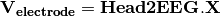
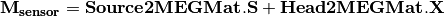

Tutorial¶
Table of Contents
Data format¶
OpenMEEG handles several file formats corresponding to different types of objects: vectors, matrices, head geometries, meshes, dipoles, conductivities.
Vectors and matrices¶
By default, matrices and vectors are stored on disk using a MATLAB file format. Symmetric matrices which are not directly representable in the MATLAB format are represented as a MATLAB struct. Other vector/matrices file formats are also supported. Forcing a specific file format is achieved by specifying the proper file extension. Matlab extension is .mat. Other useful file formats are ASCII (extension .txt) which generates human readable files, and BrainVisa texture file format (extension .tex).
OpenMEEG’s own binary file format (extension .bin) is available solely for backward compatibility and should be considered as deprecated (as it is subsumed by the MATLAB file format).
Geometrical model, mesh and conductivity files¶
OpenMEEG geometrical models are described through several files. The toplevel file (generally ending with the extension .geom) assembles various interface descriptions to build Domains corresponding to head tissues. Empty lines or lines beginning with # are non-significant.
The file must start with a special comment line which allows its identification (see example in Figure~ref{fig:geom}). Geometrical models globally contain 2 sections, one for describing the interfaces and one for describing the domains. In OpenMEEG, we make the following distinction between Mesh and Interface, which is helpful for defining non nested geometries.
- “Mesh”: a collection of vertices and triangles all connected.
- “Interface”: a closed mesh.
Sample non-nested geometry description:

Sample nested geometry descriptions:


The section starting with the keyword MeshFile`is optional, as well as the section ``Meshes.
If MeshFile is found, it specifies the path to the VTK/vtp file containing the vertices and annoted triangles of your geometry. (Triangle annotations are labels that specify the mesh names).
If Meshes is found, it specifies the paths to the meshes that may or may not be named. Mesh file formats supported are tri, bnd, mesh, off, and vtk (in case you use VTK).
A Mesh is defined with the keyword Mesh followed by an optional name and “:”.
If no name is provided, the Mesh is named by its index (starting from 1).
If none of the two sections MeshFile and Meshes are present, the next section called Interfaces is expected to contain the filenames of the meshes.
Interfaces section specifies the mesh descriptions of the interfaces between tissues.
It is introduced by the keyword Interfaces followed by the number of such interfaces.
An Interface is defined with the keyword Interface`followed by a name and ":".
If no name is provided, the Interface is named by its index (starting from 1).
If the sections ``MeshFile and Meshes were NOT specified before, a path to a mesh file is expected.
In the opposite case, a sequence of mesh names is expected.
These meshes are concatenated to form a closed Interface.
‘+’ or ‘-‘ sign preceeding a mesh name reorients the meshes in order to form a consistently oriented interface.
The second section describes the head tissues and is introduced by the keyword Domains followed by the number of such domains. Each domain is then described, one domain per line, by the keyword Domain followed by the domain name (which serves for identification and also appears in the conductivity description) followed by a list of IDs (names or integers).
These IDs are the interface names (as depicted in previous paragraph).
They must be preceeded by a ‘+’ or ‘-‘ sign to indicate whether the domain is outside or inside the corresponding interface (as defined by the outward normal of the interface).
See Figure~ref{fig:geom} for a detailed example.
Mesh files (generally ending with the .tri extension) follow the BrainVisa file format for meshes. These files contain two sections. Each section is
introduced by the character - appearing at the beginning of the line followed by a space followed by either one number (first section) or three times
the same number (second section).
The first section contains a list of points with associated normals. The number on the line introducing the section is the number of points. Each following line corresponds to a single point. Its coordinates are the three first numbers appearing on the line. The normal corresponds to the following three numbers. Each point is assigned an index (starting at 0) corresponding to its order of appearance in the list.
The second section contains the triangles of the mesh. The number (repeated three times) in the section delimiter corresponds to the number of triangles. Each triangle is depicted by a sequence of three integers corresponding to the indices of the points assigned as described in the previous paragraph.
The following small example describes a very simple mesh containing 4 points and 4 triangles:
- 4
0 0 0 -0.5773 -0.5773 -0.5773
1 0 0 1 0 0
0 1 0 0 1 0
0 0 1 0 0 1
- 4 4 4
0 1 2
0 1 3
0 2 3
1 2 3
Interfaces are required to be closed in order for the Boundary Element Method to function correctly. This is also necessary for the source meshes when computing forward solutions using surfacic source models (see below). Moreover, the interface meshes must not intersect each other. Non-intersection can be checked with the command om_check_geom. The command om_mesh_info applied to a mesh provides its number of points, of triangles, minimum and maximum triangle area, and also its Euler characteristic. The Euler characteristic of a closed mesh of genus 0 (homotopic to a sphere) is equal to 2. The Euler characteristic gives an indication if a mesh is likely to be closed or not.
In order to generate a VTK/vtp file, one can use the tool provided om_meshes_to_vtp, which from a list of (closed or not) meshes and names, remove dupplicated vertices and create an easily viewable file in VTK/Paraview.
In order to check a geometry file, one can use the tool provided om_check_geom, which display the read informations.
A conductivity file (generally ending with the extension .cond) is a simple ASCII file that contains associations between tissue names and conductivity values. Associations are provided one per line. Empty lines or lines beginning with # are non-significant. The file must start with a special comment line which allows its identification. The next figure provides an example conductivity file corresponding to the geometry file presented above.

Note that the tissue names are the ones appearing in the Domains descriptions of the file depicting the geometrical model.
Source descriptions¶
Sources may be represented either by a surfacic distribution of dipoles, or by isolated dipoles.
A surfacic distribution can be defined by a mesh that supports the dipoles. The dipole orientations are then constrained to the normal direction to the mesh and the moment amplitude is modelled as continuous across the mesh (piecewise linear). Source values are defined at the mesh vertices.
Isolated dipoles are defined by a simple ASCII file as shown below:

OpenMEEG from the command line¶
Diagram for the low level pipeline for computing MEG and EEG leadfields (a.k.a., gain matrices) using OpenMEEG:

This section reviews the main OpenMEEG command line tools. The general syntax and main options of each command is briefly provided.
Full details are available in OpenMEEG documentation. In this section, command names are in red, options are in green and produced files are shown in blue.
om_assemble¶
General syntax:
om_assemble :opt:`Option Parameters Matrix
This program assembles the different matrices to be used in later stages. It uses the head description, the sources and the sensors information. Option selects the type of matrice to assemble. Parameters depends on the specific option Option. Except if otherwise noted, it takes the form:
subject.geom subject.cond OptParam where subject.geom and subject.cond are files describing respectively the geometrical model and the conductivities of the head (see section ??? for a short description of these files). OptParam depends on the actual Option. Matrix is the name of the output file containing the computed matrix.
We now detail the possible Options (with their abbreviated versions given in parentheses), allowing to define various matrices to assemble:
General options for om_assemble¶
- -help (-h,:opt:–help): summarizes all possible options.
Head modelling options for om_assemble: produce matrices linked to the propagation of electrical signals in the head.
- -HeadMat (-HM, -hm): om_assemble computes the Head matrix for Symmetric BEM (left-hand side of the linear system). This matrix corresponds to the propagation of electrical signals within the head. There is no OptParam in this case.
Source modelling options for om_assemble: compute the source matrix for Symmetric BEM (right-hand side of the linear system). This matrix maps the representation of the sources to their associated electric potential in an infinite medium ( ). Different options exist for the 2 types of source models:
). Different options exist for the 2 types of source models:
- -SurfSourceMat (-SSM, -ssm): should be used for continuous surfacic distributions of dipoles.
OptParam is a file containing a mesh that describes the surface. For faster computations, one can consider giving the name of the domain (containing all dipoles) as a string as an optional parameter in the end of the command line.
-DipSourceMat (-DSM, -dsm): should be used when considering several isolated dipoles. This model is the most commonly used and should be used by default even if the dipoles correspond to the vertices of a cortical mesh. OptParam is a file containing the dipole descriptions. For faster computations, one can consider giving the name of the domain (containing all dipoles) as a string as an optional parameter in the end of the command line (see Example).
Sensor modelling options for om_assemble: compute matrices that integrate source information and computed potentials to provide the actual solution of the forward problem. The situation is slightly different for EEG, which only needs to compute the electric potential, and for MEG, which depends both on the electric potential and on the sources:
-Head2EEGMat (-H2EM, -h2em): om_assemble computes the interpolation matrix that maps potentials computed on the scalp to EEG sensors. OptParam is a file describing the EEG sensor positions.
-Head2MEGMat (-H2MM, -h2mm): om_assemble computes the contribution of Ohmic currents to the MEG sensors. OptParam is a file describing the SQUIDS geometries and characteristics.
-Head2InternalPotMat (-H2IPM, -h2ipm): om_assemble computes the matrix that allows the computation of potentials at internal positions from potentials and normal currents on head interfaces, as computed by the symmetric BEM.
- -SurfSource2MEGMat (-SS2MM, -ss2mm): om_assemble computes the source contribution to the MEG sensors using the same source model as the one used for the option -SurfSourceMat, i.e. surfacic distribution of dipoles. For this option, :opt:`OptParam takes the form:
- mesh squids where mesh contains a mesh describing the source surface and squids is a file describing the SQUIDS geometries and characteristics.
- -DipSource2MEGMat (-DS2MM, -ds2mm): om_assemble computes the source contribution to the MEG sensors using the same source model as the one used for the option -DipSourceMat, i.e. isolated dipoles.
For this option, OptParam takes the form:
- dipoles squids where dipoles contains the dipole description and squids is a file describing the SQUIDS geometries and characteristics.
- -DipSource2InternalPotMat (-DS2IPM, -ds2ipm): om_assemble computes the source contribution to the chosen internal points. It gives the potential due to isolated dipoles, as if the medium were infinite. For this option, OptParam takes the form:
- dipoles internalPoints where dipoles contains the dipole description and internalPoints is a file describing the points locations.
EIT options for om_assemble:
- -EITSourceMat (-EITSM, -EITsm,): om_assemble computes the right-hand side for scalp current injection. This usage of om_assemble outputs the right-hand side vector for a given set of EIT electrode. For this option, OptParam is a file describing the EIT electrode positions.
om_minverser
General syntax:
om_minverser HeadMat HeadMatInv
This program is used to invert the symmetric matrix as provided by the command om_assemble with the option -HeadMat.
- This command has only one option.
- -help (-h,:opt:–help): summarizes the usage of om_minverser.
om_gain
General syntax:
om_gain Option HeadMatInv Parameters SourceMat Head2EEGMat GainMatrix
This command computes the gain matrix by multiplying together matrices obtained previously (e.g. HeadMatInv is the matrix computed using om_minverser). The resulting gain matrix is stored in the file GainMatrix. Option selects the type of matrice to build. Parameters depend on the specific option Option.
General options:
- -help (-h,:opt:–help): summarizes the usage of om_gain for all its possible options.
Gain matrix type options: select the type of gain matrix to be computed by om_gain.
- -EEG: allows to compute an EEG gain matrix. Parameters are then:\
- HeadMatInv SourceMat Head2EEGMat
- SourceMat is the matrix obtained using om_assemble with either of the options -SurfSourceMat or -DipSourceMat, depending on the source model. Head2EEGMat is the matrix obtained using om_assemble with the option -Head2EEGMat.
- -EEG option is also used to compute an EIT gain matrix: in this case, SourceMat
should contain the output of the -EITsource option of om_assemble. Multiplying the EIT gain matrix by the vector of applied currents at each EIT electrode yields the simulated potential on the EEG electrodes. The applied current on the EIT electrodes should sum to zero.
- -MEG: allows to compute an MEG gain matrix. Parameters are then:
- HeadMatInv SourceMat Head2MEGMat Source2MEGMat
- SourceMat is the matrix obtained using om_assemble with either of the options -SurfSourceMat or -DipSourceMat, depending on the source model. Head2MEGMat is the matrix obtained using om_assemble with the option -HeadMEEGMat. Source2MEGMat is the matrix obtained using om_assemble with either of the options -SurfSource2MEGMat or -DipSource2MEGMat, depending on the source model.
-InternalPotential: allows to compute an internal potential gain matrix for sensors within the volume. Parameters are then:
- HeadMatInv SourceMat Head2InternalPotMat Source2InternalPotMat
- Head2InternalPotMat and Source2InternalPotMat are respectivelly obtained using om_assemble with option -Head2InternalPotMat and -DipSource2InternalPotMat.
Examples¶
Assuming a head model represented by the geometry file head.geom and the conductivity file head.cond and EEG sensors detailed in a file head.eegsensors.
Computing the EEG gain matrix for sources distributed on the surface represented by the file sources.tri is done via the following set of commands:
om_assemble -HeadMat head.geom head.cond head.hm
om_assemble -SSM head.geom head.cond sources.tri head.ssm
om_assemble -h2em head.geom head.cond head.eegsensors head.h2em
om_minverse head.hm head.hm_inv
om_gain -EEG head.hm_inv head.ssm head.h2em head.gain
Considering now isolated dipolar sources detailed in the file sources.dip with MEG sensors depicted in the file head.squids. Using the same head model, the MEG gain matrix is obtained via the following set of commands:
om_assemble -HeadMat head.geom head.cond head.hm
om_assemble -DSM head.geom head.cond sources.dip head.dsm
om_assemble -h2mm head.geom head.cond head.squids head.h2mm
om_assemble -ds2mm sources.dip head.squids head.ds2mm
om_minverser head.hm head.hm_inv
om_gain -MEG head.hm_inv head.dsm head.h2mm head.ds2mm head.gain
Commands¶
In the following, the binaries in red, the options in green, the inputs are in black and the outputs in blue.
Head Matrix assembly HeadMat¶
Input:
- subject.geom: geometry description file (see Appendix~ref{sec:geom})
- subject.cond: conductivity description file (see Appendix~ref{sec:cond})
Output:
- HeadMat.bin: binary file containing the matrix HeadMat (symmetric format).
The symmetric format only stores the lower half of a matrix.
om_assemble -HeadMat subject.geom subject.cond HeadMat.bin
Note
the abbreviated option names -HM or -hm can be used instead of -HeadMat.
Source matrix assembly Source¶
Input:
subject.geom: geometry description file (see Appendix~ref{sec:geom})
subject.cond: conductivity description file (see Appendix~ref{sec:cond})
- the source(s):
- dipolar case: dipolePosition.dip dipole description file (list of coordinates and orientations) (see Appendix~ref{sec:dipoles})
- case of distributed sources: sourcemesh: source mesh (accepted formats: *.tri or *.mesh of BrainVisa, or *.vtk)
Output:
- SourceMat.bin: binary file containing SourceMat
For dipolar sources:
- om_assemble -DipSourceMat subject.geom subject.cond dipolePosition.dip SourceMat.bin
Note
the abbreviated option names -DSM or -dsm can be used instead of -DipSourceMat.
For distributed sources:
- om_assemble -SurfSourceMat subject.geom subject.cond sourcemesh SourceMat.bin
Note
the abbreviated option names -SSM or -ssm can be used instead of -SurfSourceMat.
HeadMat matrix inversion¶
Input:
- HeadMat.bin binary file containing matrix HeadMat (symmetric format)
Output:
- HeadMatInv.bin: binary file containing matrix inverse(HeadMat) (symmetric format)
om_minverser HeadMat.bin HeadMatInv.bin
Linear transformation from X to the sensor potential¶
For EEG¶
A linear interpolation is computed which relates X to the electrode potential through the linear transformation:

where:
- V_{electrode} is the column-vector of potential values at the sensors (output of EEG forward problem),
- X is the column-vector containing the values of the potential and the normal current on all the surface of the model,
- Head2EEGMat is the linear transformation to be computed.
Input:
- subject.geom geometry description file (see Appendix~ref{sec:geom})
- subject.cond conductivity description file (see Appendix~ref{sec:cond})
- patchespositions.txt file containing the positions of the EEG electrodes (see Appendix~ref{sec:sensors})
Output:
- Head2EEGMat.bin: file containing the matrix Head2EEGMat (sparse format)
The sparse format allows to store efficiently matrices containing a small proportion of non-zero values.
om_assemble -Head2EEGMat subject.geom subject.cond patchespositions.txt Head2EEGMat.bin
Note
the abbreviated option names -H2EM`or :opt:-h2em`can be used instead of -Head2EEGMat.
For MEG¶
In the case of MEG there are more matrices to assemble, as explained in section~ref{}. The magnetic field is related both to the sources directly, as well as to the electric potential, according to:

Contribution to MEG from the potential (Head2MEGMat):
Input:
- subject.geom geometry description file (see Appendix~ref{sec:geom})
- subject.cond conductivity description file (see Appendix~ref{sec:cond})
- sensorpositions.txt positions and orientations of MEG sensors (see Appendix~ref{sec:sensors})
Output:
- Head2MegMat.bin binary file containing Head2MEGMat
om_assemble -Head2MEGMat subject.geom subject.cond sensorpositions.txt Head2MEGMat.bin
Note
the abbreviated option names -H2MM or -h2mm can be used instead of -Head2MEGMat.
Contribution to MEG from the sources (Source2MEGMat):
Input:
- the source(s):
- [[dipolar sources]] dipolePosition.dip dipole description file (list of coordinates and orientations) (see Appendix~ref{sec:dipoles})
- [[distributed sources]] sourcemesh source mesh (accepted formats: *.tri or *.mesh of BrainVisa, or *.vtk)
sensorpositions.txt positions and orientations of MEG sensors (see Appendix~ref{sec:sensors})
Output:
- DipSource2MEGMat.bin binary file containing DipSource2MEGMat \
- or SurfSource2MEGMat.bin binary file containing SurfSource2MEGMat
For dipolar sources:
om_assemble -DipSource2MEGMat dipolePosition.dip sensorpositions.txt DipSource2MEGMat.bin
Note
the abbreviated option names -DS2MM or -ds2mm can be used instead of -DipSource2MEGMat.
For distributed sources:
om_assemble -SurfSource2MEGMat sourcemesh sensorpositions.txt SurfSource2MEGMat.bin
Note
the abbreviated option names -SS2MM or -ss2mm can be used instead of -SurfSource2MEGMat.
Gain matrix computation¶
The gain matrix represents the linear transformation relating the activation of sources, at predefined positions and orientations to the values of the fields of interest (electric potential or magnetic field) at predefined sensor positions (and orientations for MEG).
For EEG¶
Input:
- HeadMatInv.bin binary file containing inv(HeadMat) (symmetric format)
- SourceMat.bin binary file containing either SurfSourceMat or DipSourceMat
- Head2EEGMat.bin binary file containing Head2EEGMat (sparse format)
Output:
- GainEEGMat.bin binary file contining the gain matrix
om_gain-EEG`HeadMatInv.bin SourceMat.bin Head2EEGMat.bin :output:`GainEEGMat.bin
For MEG¶
Input:
- HeadMatInv.bin binary file containing inv(HeadMat) (symmetric format)
- SourceMat.bin binary file containing either SurfSourceMat or DipSourceMat
- Head2MEGMat.bin binary file containing Head2MEGMat
- Source2MEGMat.bin binary file containing either DipSource2MEGMat or SurfSource2MEGMat
Output:
- GainMEGMat.bin binary file containing the gain matrix
om_gain-MEG`HeadMatInv.bin SourceMat.bin Head2MEGMat.bin Source2MEGMat.bin :output:`GainMEGMat.bin
Data¶
This section describes the type of data that is required to run a forward problem with OpenMEEG.
Meshes¶
Meshes describing the interfaces between regions of homogeneous conductivity. These meshes generally represent:
- the inner skull surface
- the outer skull surface
- the outer scalp surface
The recommended mesh size is approximately 600 to 800 points per surface.

Example with three surfaces: outer scalp (gray), outer skull (blue) and inner skull (pink):

Sources¶
Sources can be of two types: isolated or distributed.
For distributed sources, a source mesh describes their support. This is a detailed mesh generally covering the whole cortex. The mesh size should not exceed 35 000 points. The source amplitude is represented as continuous, and linear on each of the mesh triangles. The source orientation is modeled as piecewise constant, normal to each of the mesh triangles.

Isolated sources are the superposition of current dipoles, each of which is defined by its position and its moment.
Sensors¶
For EEG, the sensors are defined by the list of the x-y-z coordinates of the electrode positions. The electrodes are considered punctual and are called patches. The MEG sensor description is more complex, see Appendix~ref{chap:format}.
Geometry description file¶
- The geometry description file provides:
- the number of the meshed surfaces separating the different domains,
- the names of the files corresponding to these surfaces,
- the number of domains of homogeneous conductivity,
- the positions of the domains with respect to the surfaces (inside or outside)
The geometry description file should have as extension: *.geom

The domains are to be described in the following way (first the external surface and then the internal surface):
Domain Brain -1 & \\
Domain Skull \textbf{1 -2} & \emph{and not Domain Skull -2 1} \\
Domain Skin \textbf{2 -3} & \emph{and not Domain Skin -3 2} \\
Domain Air 3 & \\
Note
Meshes paths can be global (as on drawing) or relative to where the command line is executed. For the meshes, the following formats are allowed:
- *.tri~: TRI format corresponding to early BrainVisa. Also handled by Anatomist.
- *.mesh~: MESH format corresponding to BrainVisa versions 3.0.2 and later. Also handled by Anatomist.
- *.vtk~: VTK mesh format.
Conductivity description file¶
The conductivity description file defines the conductivity values corresponding to each domain listed in the Geometry Description File (section~ref{sec:geom}).
The file extension should be: *.cond .
Warning
the domain names should match the ones defined in the Geometry Description File (beware of differences in upper/lower case).
Source description¶
Sources are defined by their geometry (position and orientation) and their magnitude. OpenMEEG handles two types of source models: isolated dipoles, or distributed dipoles: these two models differ in their geometry description.
Source position and orientation¶
Isolated dipoles¶
Isolated dipoles are represented by a text file (extension *.dip or *.txt), in which each line defines a dipole position and orientation, encoded in 6 real values:
- three values encoding the Cartesian coordinate for the position,
- three values encoding the orientation of the dipole (supposed unitary).
The following example shows a file describing 5 isolated dipoles:
Note
The referential of the coordinates should be the same as for the meshes (the MR coordinates in general).
Distributed dipoles¶
Distributed dipoles are supported on a mesh, whose format must be *.mesh, or *.tri, or *.vtk.
Source activation¶
Source activation files are text files, in which each line corresponds to a source, and each column to a time sample.
- for isolated dipoles, the nth line corresponds to the amplitude of the nth dipole (with its fixed orientation)
- for distributed dipoles, the nth line correspond to the amplitude of the nth vertex in the source mesh.
Example for isolated dipoles:

Sensor definition¶
The sensor definition is provided in a text file, in which each line provides the position of the sensor, and additional information such as its orientation or its name. More precisely, there are 5 options for defining sensors:
- 1 line per sensor and 3 columns (typically for EEG sensors or MEG sensors without orientation) :
- the 1st, 2nd and 3rd columns are respectively position coordinates x, y, z of sensor
- 1 line per sensor and 4 columns (typically for EEG sensors or MEG sensors without orientation) :
- the 1st column is sensors names
- the 2nd, 3rd and 4th are respectively position coordinates x, y, z of sensor
- 1 line per sensor and 6 columns (typically for MEG sensors) :
- the 1st, 2nd and 3rd are respectively position coordinates x, y, z of sensor
- the 4th, 5th and 6th are coordinates of vector orientation
- 1 line per sensor and 7 columns (typically for MEG sensors) :
- the 1st column is sensors names
- the 2nd, 3rd and 4th are respectively position coordinates x, y, z of sensor
- the 5th, 6th and 7th are coordinates of vector orientation
- 1 line per integration point for each sensor and 8 columns (typically for MEG realistic sensors with coils, or gradiometers) :
- the 1st column is sensors names
- the 2nd, 3rd and 4th are respectively position coordinates x, y, z of sensor
- the 5th, 6th and 7th are coordinates of vector orientation
- the 8th is the weight to apply for numerical integration (related to sensor name)
An example of MEG sensor description: